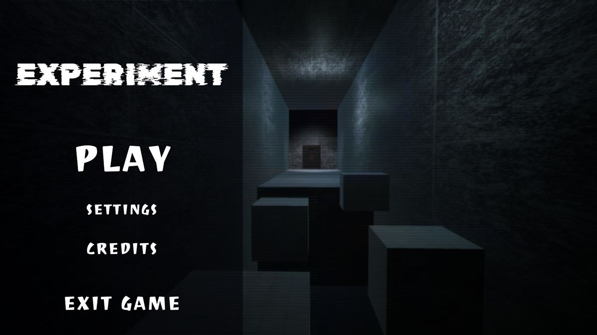
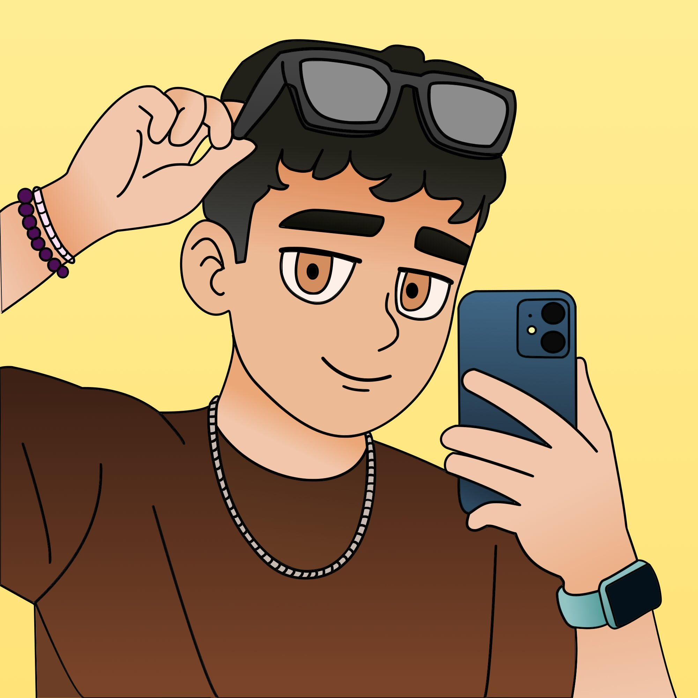

THE EXPERIMENT
Un plataformas de terror en el que cada salto te mete más hondo en un sitio del que no deberías poder salir. Lo hicimos en 24 horas entre el creador de contenido Rise y yo.
Jugar ahora
CentusDevMe llamo César, pero en redes soy Centus Dev. Hago videojuegos y, en vídeos cortos, te cuento cómo funcionan por dentro los que juegas tú.
Una pregunta, un minuto ¿Por qué los coches de tantos videojuegos son, en realidad, esferas?Contenido
Cada pocos días sale uno nuevo en YouTube, TikTok e Instagram. Parto de algo que has visto mil veces jugando y te explico qué hay detrás, sin que haga falta saber programar.
Los shorts que más lejos han llegado en YouTube
Juegos
Game jams con el reloj en contra, proyectos de clase y experimentos que acaban convertidos en vídeo. Todos se pueden jugar.

Un plataformas de terror en el que cada salto te mete más hondo en un sitio del que no deberías poder salir. Lo hicimos en 24 horas entre el creador de contenido Rise y yo.
Jugar ahoraLos muertos pueden pedir 24 horas más de vida para cerrar sus asuntos. Tú decides quién se las merece… y no todos vienen con buenas intenciones.
Hecho en solitario
Salta entre el mundo real y el mundo de las ideas para superar cada etapa de la vida. Tema de la jam: «Dos mundos, un desafío».
En equipo con Miguel, Rubén, Mafer e Irene
Robas el diamante gigante de un museo espacial y toca huir hasta tu nave, esquivando a la policía y aprovechando la gravedad baja.
Hecho en solitario
Cae una bomba en un casino de Las Vegas. Todos huyen; tú ves fichas sin vigilar. Tienes 90 segundos antes de que caiga la segunda.
Hecho en solitario
Centus Dev
César · Madrid
Quién hay detrás
Soy César, aunque en redes me conocéis como Centus Dev. Estudio el Doble Grado en Diseño y Desarrollo de Videojuegos e Ingeniería de Computadores, y casi todo lo que hago gira alrededor de lo mismo: hacer juegos y entender cómo funcionan.
Empecé con proyectos de clase y game jams, de esas en las que tienes un fin de semana (o 24 horas) para sacar algo jugable. Y cuantos más juegos hacía, más trucos veía en los de los demás: coches que en realidad son esferas, cámaras que no dibujan lo que no están mirando…
Así que empecé a contarlos en vídeos cortos. Hoy los subo a YouTube, TikTok e Instagram, sigo haciendo mis propios juegos y, fuera de cámara, llevo las redes de Virtual Soul. Hacer videojuegos incluso me ha llevado hasta Alemania.
Trayectoria
De lo último que he hecho a donde empezó todo. Desliza para cargar partidas anteriores.
Próximamente
¿El siguiente guardado lo hacemos juntos?
Hablemos →Ahora
Mientras sigo publicando vídeos cada pocos días y desarrollando mis propios juegos.
Colaboraciones
Primeras colaboraciones con marcas y un juego hecho junto a otro creador de contenido.
Agosto 2026
Y aprovecho para contar cómo son las universidades de videojuegos de otros países.
Julio 2026
«Cómo saben tu posición los juegos de carreras» se convierte en el short más visto del canal hasta ahora.
Abril 2026
«¿Tomodachi Life es aleatorio?» se convierte en uno de los shorts más vistos del canal.
Game Gen Jam
Only 24 Hours More nace en la Game Gen Jam: narrativa, decisiones y un dilema moral.
Primeros juegos
ALL-IN para la Plata Pez Jam y Galactic Thief como proyecto de la carrera. Los dos, en solitario.
Diciembre 2025
Los primeros vídeos contando cómo funcionan los videojuegos por dentro. En marzo de 2026 abro el canal de YouTube y subo ahí todo lo anterior.
Junio 2024
Empiezo a aprender y a comprender las bases del desarrollo de videojuegos.
Colaboraciones
Contenido con marcas de tecnología y educación, y proyectos junto a otros creadores.
Media kit
En mi media kit tienes audiencia, formatos y resultados actualizados.
Ver media kitDatos de Instagram de los últimos 30 días según mi media kit en Beacons (septiembre de 2026).
Fuera de cámara
Virtual Soul es una asociación sin ánimo de lucro dedicada a los videojuegos. Su gran cita es la GameGen: ponencias, zona de demos, torneos, game jam y concurso de arte. Ahí me encargo de las redes sociales y ayudo a organizar los eventos y a contarlos antes, durante y después.
También he estado al otro lado: Only 24 Hours More nació en la Game Gen Jam.
Contacto
Colaboraciones con marcas, proyectos de videojuegos, eventos o una idea que todavía no tiene nombre. Escríbeme y te respondo.